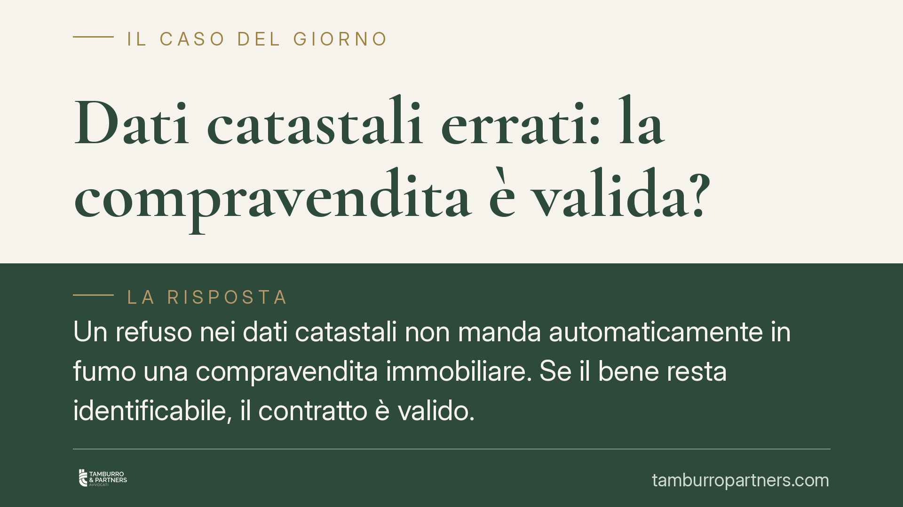

Dati catastali errati: la compravendita è valida?
Un refuso nei dati catastali non manda automaticamente in fumo una compravendita immobiliare. Se il bene resta identificabile, il contratto è valido. Ma il venditore può comunque rispondere verso l'acquirente, anche quando l'errore nasce da un atto redatto dal notaio. Vediamo dove passa la linea tra vizio formale irrilevante e inadempimento vero e proprio.

Il problema: un numero sbagliato in atto
Capita più spesso di quanto si pensi. Nel rogito finisce un dato catastale errato: foglio, particella o subalterno non corrispondenti al bene effettivamente venduto. La domanda che ne segue è duplice. Il contratto è ancora valido? E chi risponde dell'errore?
La distinzione da tenere a mente è netta: una cosa è la validità dell'atto, altra è la responsabilità di chi vende per eventuali conseguenze dannose.
Inquadramento normativo
Il contratto di compravendita immobiliare deve rivestire forma scritta a pena di nullità (art. 1350 c.c.). L'elemento essenziale è però l'identificabilità dell'oggetto, non la perfezione del dato catastale. Il catasto, infatti, ha finalità prevalentemente fiscali e non è prova esclusiva della proprietà: serve a individuare l'immobile, non a costituirlo.
Ne discende un principio consolidato in giurisprudenza: l'errore nei dati catastali non determina nullità o annullabilità del contratto quando il bene resta comunque individuabile attraverso gli altri elementi dell'atto (confini, descrizione, provenienza, planimetrie allegate). La volontà delle parti su *quale* immobile sia oggetto del trasferimento prevale sul refuso identificativo.
Diverso è il piano della responsabilità del venditore. L'obbligo primario di chi vende è consegnare al compratore proprio il bene promesso (art. 1476 n. 1 c.c.). Se, a causa dei dati errati, l'acquirente si ritrova con un bene diverso da quello pattuito — o con uno stesso immobile apparentemente alienato a due soggetti distinti — si entra nel terreno dell'inadempimento contrattuale (art. 1218 c.c.) e, nei casi più gravi, della consegna di *aliud pro alio*, cioè di una cosa radicalmente diversa da quella dovuta.
*Nota sulla fonte*: la pronuncia di Cassazione citata nella rassegna di settore non è al momento verificabile nei suoi estremi puntuali (numero e anno). Riportiamo pertanto il principio di diritto nella sua formulazione consolidata, senza richiamare un riferimento numerico non confermato.
Quando il venditore risponde comunque
Il caso più insidioso è quello dei dati catastali utilizzati in due contratti diversi. Se lo stesso identificativo viene speso per trasferire beni distinti, o se un medesimo bene risulta riferito a dati non coincidenti, il venditore può essere chiamato a rispondere dell'inadempimento verso l'acquirente che ne subisce il pregiudizio.
Qui emerge il punto più rilevante. L'errore può materialmente dipendere dal notaio che ha redatto l'atto. Ma questo non sposta la responsabilità verso l'acquirente: il rapporto tra venditore e notaio è autonomo rispetto a quello tra venditore e compratore. Chi vende non può opporre al proprio acquirente la colpa del professionista per liberarsi dall'obbligazione assunta.
Il venditore, in altri termini, risponde in prima battuta verso la controparte contrattuale. Potrà poi, in via di regresso, rivalersi sul notaio per l'errore professionale, ma su un piano separato e con un'azione distinta.
Implicazioni pratiche
Per l'acquirente il messaggio è di cautela ragionata: un dato catastale sbagliato non significa, di per sé, acquisto nullo. Prima di temere per la validità dell'atto occorre verificare se il bene sia comunque identificabile.
Per il venditore, il monito è opposto: non ci si libera della responsabilità scaricandola sul notaio. La diligenza nel controllo dei dati prima della firma resta parte dell'obbligazione.
Per entrambi, infine, la corretta allegazione di planimetrie e la coerenza tra descrizione e identificativi catastali riducono drasticamente il rischio di contenzioso.
Cosa fare in concreto
- Verificare la coerenza dei dati prima del rogito: incrociare visura catastale, planimetria, atto di provenienza e descrizione dei confini. Le discordanze vanno risolte prima della firma.
- Controllare che l'immobile sia univocamente identificabile nell'atto anche al netto del dato catastale, così da escludere dubbi sull'oggetto del trasferimento.
- Segnalare per iscritto al notaio ogni incongruenza riscontrata, conservando traccia della comunicazione.
- In presenza di dati usati in più contratti, raccogliere tempestivamente la documentazione completa (atti, visure storiche, corrispondenza) prima di assumere iniziative.
- In caso di contestazione, è opportuno valutare senza indugio la propria posizione, poiché i termini per agire — soprattutto in materia di inadempimento — possono incidere sulla tutela disponibile.
---
*Contributo informativo a cura di Tamburro & Partners — Avv. Giuseppe Tamburro. Non costituisce parere legale.*
Ogni contratto ha il suo equilibrio.
Se vuoi una revisione delle clausole o una redazione su misura, scrivi allo studio. Ti rispondiamo entro un giorno lavorativo.